9.5 Reduktionen./course1/wly/09/05-NP-reductions.wly:2:11
9.5 Reduktionen./course1/wly/09/05-NP-reductions.wly:2:11
3-Colorability./course1/wly/09/05-NP-reductions.wly:4:6
und
./course1/wly/09/05-NP-reductions.wly:4:25CNF-Satisfiability./course1/wly/09/05-NP-reductions.wly:4:31
sind in./course1/wly/09/05-NP-reductions.wly:4:54
NP: gegeben ein Graph
./course1/wly/09/05-NP-reductions.wly:5:5$G$./course1/wly/09/05-NP-reductions.wly:5:27
und eine Färbung
./course1/wly/09/05-NP-reductions.wly:5:30$c$./course1/wly/09/05-NP-reductions.wly:5:48,./course1/wly/09/05-NP-reductions.wly:5:51
so können./course1/wly/09/05-NP-reductions.wly:5:51
wir effizient feststellen, ob
./course1/wly/09/05-NP-reductions.wly:6:5$c$./course1/wly/09/05-NP-reductions.wly:6:35
eine gültige 3-Färbung./course1/wly/09/05-NP-reductions.wly:6:38
von
./course1/wly/09/05-NP-reductions.wly:7:5$G$./course1/wly/09/05-NP-reductions.wly:7:9
darstellt; gegeben eine CNF-Formel
./course1/wly/09/05-NP-reductions.wly:7:12$F$./course1/wly/09/05-NP-reductions.wly:7:48
und eine./course1/wly/09/05-NP-reductions.wly:7:51
Belegung
./course1/wly/09/05-NP-reductions.wly:8:5$\alpha$./course1/wly/09/05-NP-reductions.wly:8:14,./course1/wly/09/05-NP-reductions.wly:8:22
so können wir effizient überprüfen, ob./course1/wly/09/05-NP-reductions.wly:8:22
./course1/wly/09/05-NP-reductions.wly:9:5$F$./course1/wly/09/05-NP-reductions.wly:9:5
unter
./course1/wly/09/05-NP-reductions.wly:9:8$\alpha$./course1/wly/09/05-NP-reductions.wly:9:15
zu
./course1/wly/09/05-NP-reductions.wly:9:23True./course1/wly/09/05-NP-reductions.wly:9:28
auswertet. Können wir./course1/wly/09/05-NP-reductions.wly:9:33
./course1/wly/09/05-NP-reductions.wly:10:53-Colorability./course1/wly/09/05-NP-reductions.wly:10:6
und
./course1/wly/09/05-NP-reductions.wly:10:25CNF-Satisfiability./course1/wly/09/05-NP-reductions.wly:10:31
auch./course1/wly/09/05-NP-reductions.wly:10:54
effizient entscheiden? Sind sie in P? Das ist (Stand: 2025)./course1/wly/09/05-NP-reductions.wly:11:5
nicht bekannt. Was wir aber sagen können: entweder sind./course1/wly/09/05-NP-reductions.wly:12:5
beide effizient lösbar oder beide nicht. Sie sind./course1/wly/09/05-NP-reductions.wly:13:5
gewissermaßen gleich schwer../course1/wly/09/05-NP-reductions.wly:14:5
Theorem 9.5.1./course1/wly/09/05-NP-reductions.wly:16:5 ./course1/wly/09/05-NP-reductions.wly:16:5 Falls ./course1/wly/09/05-NP-reductions.wly:18:9CNF-Satisfiability./course1/wly/09/05-NP-reductions.wly:18:16 in P ist, dann auch./course1/wly/09/05-NP-reductions.wly:18:39 ./course1/wly/09/05-NP-reductions.wly:19:93-Colorability./course1/wly/09/05-NP-reductions.wly:19:10../course1/wly/09/05-NP-reductions.wly:19:29
Beweis
Wir nehmen an, wir hätten einen effizienten Algorithmus./course1/wly/09/05-NP-reductions.wly:22:9
./course1/wly/09/05-NP-reductions.wly:23:9is_satisfiable(./course1/wly/09/05-NP-reductions.wly:23:10$F$./course1/wly/09/05-NP-reductions.wly:23:25)./course1/wly/09/05-NP-reductions.wly:23:28../course1/wly/09/05-NP-reductions.wly:23:30
Wir verwenden diesen, um einen./course1/wly/09/05-NP-reductions.wly:23:30
Algorithmus
./course1/wly/09/05-NP-reductions.wly:24:9is_3_colorable./course1/wly/09/05-NP-reductions.wly:24:22
zu entwerfen. Sei nun./course1/wly/09/05-NP-reductions.wly:24:37
./course1/wly/09/05-NP-reductions.wly:25:9$G = (V,E)$./course1/wly/09/05-NP-reductions.wly:25:9
ein Graph und
./course1/wly/09/05-NP-reductions.wly:25:20$v_1, \dots, v_n$./course1/wly/09/05-NP-reductions.wly:25:35
seine Knoten../course1/wly/09/05-NP-reductions.wly:25:52
Wir führen
./course1/wly/09/05-NP-reductions.wly:26:9$3n$./course1/wly/09/05-NP-reductions.wly:26:20
Boolesche Variable ein:./course1/wly/09/05-NP-reductions.wly:26:24
./course1/wly/09/05-NP-reductions.wly:27:9$r_1, \dots, r_n, g_1, \dots, g_n, b_1, \dots, b_n$./course1/wly/09/05-NP-reductions.wly:27:9../course1/wly/09/05-NP-reductions.wly:27:60
Die./course1/wly/09/05-NP-reductions.wly:27:60
Intention hierbei ist, dass
./course1/wly/09/05-NP-reductions.wly:28:9$r_i$./course1/wly/09/05-NP-reductions.wly:28:37
anzeigt, ob
./course1/wly/09/05-NP-reductions.wly:28:42$v_i$./course1/wly/09/05-NP-reductions.wly:28:55
rot./course1/wly/09/05-NP-reductions.wly:28:60
ist und so weiter. Wir müssen jetzt Klauseln erschaffen,./course1/wly/09/05-NP-reductions.wly:29:9
die die Aussage "das ist eine gültige 3-Färbung" als./course1/wly/09/05-NP-reductions.wly:30:9
CNF-Formel codieren. Wir erschaffen folgende Klauseln:./course1/wly/09/05-NP-reductions.wly:31:9
Dies tun wir für jedes ./course1/wly/09/05-NP-reductions.wly:39:9$i$./course1/wly/09/05-NP-reductions.wly:39:32../course1/wly/09/05-NP-reductions.wly:39:35 Wir sehen nun: jede Belegung,./course1/wly/09/05-NP-reductions.wly:39:35 die die obigen Klauseln erfüllt, entspricht einer ./course1/wly/09/05-NP-reductions.wly:40:9$3$./course1/wly/09/05-NP-reductions.wly:40:59 ./course1/wly/09/05-NP-reductions.wly:40:62 -Färbung ./course1/wly/09/05-NP-reductions.wly:41:9$c: V \rightarrow \{1,2,3\}$./course1/wly/09/05-NP-reductions.wly:41:18,./course1/wly/09/05-NP-reductions.wly:41:46 und umgekehrt. Nun./course1/wly/09/05-NP-reductions.wly:41:46 müssen wir die Aussage ./course1/wly/09/05-NP-reductions.wly:42:9Kante ./course1/wly/09/05-NP-reductions.wly:42:33$\{v_i,v_j\}$./course1/wly/09/05-NP-reductions.wly:42:39 ist gültig./course1/wly/09/05-NP-reductions.wly:42:52 gefärbt./course1/wly/09/05-NP-reductions.wly:43:9 formulieren:./course1/wly/09/05-NP-reductions.wly:43:17
und dann alles zusammenwerfen:./course1/wly/09/05-NP-reductions.wly:51:9
Es gilt nun:
./course1/wly/09/05-NP-reductions.wly:65:9$G$./course1/wly/09/05-NP-reductions.wly:65:22
ist genau dann
./course1/wly/09/05-NP-reductions.wly:65:25$3$./course1/wly/09/05-NP-reductions.wly:65:41-färbbar,./course1/wly/09/05-NP-reductions.wly:65:44
wenn
./course1/wly/09/05-NP-reductions.wly:65:44$F$./course1/wly/09/05-NP-reductions.wly:65:59
./course1/wly/09/05-NP-reductions.wly:65:62
erfüllbar ist. Und hier ist nun unser Code für./course1/wly/09/05-NP-reductions.wly:66:9
./course1/wly/09/05-NP-reductions.wly:67:9is_3_colorable:./course1/wly/09/05-NP-reductions.wly:67:10
def is_3_colorable(graph):./course1/wly/09/05-NP-reductions.wly:70:9
F = convert_to_CNF_formula(graph)./course1/wly/09/05-NP-reductions.wly:71:9
./course1/wly/09/05-NP-reductions.wly:72:9# F ist die oben beschriebene Formel mit 3n Variablen./course1/wly/09/05-NP-reductions.wly:72:15
return is_satisfiable(F)./course1/wly/09/05-NP-reductions.wly:73:9
Falls Ihnen eine Funktion
./course1/wly/09/05-NP-reductions.wly:76:9find_satisying_assignment./course1/wly/09/05-NP-reductions.wly:76:36
zur./course1/wly/09/05-NP-reductions.wly:76:62
Verfügung steht, so können Sie natürlich die erfüllende./course1/wly/09/05-NP-reductions.wly:77:9
Belegung direkt in eine gültige 3-Färbung übersetzen../course1/wly/09/05-NP-reductions.wly:78:9A\(\square\)
Das ging recht schnell und direkt, weil die Aussagenlogik./course1/wly/09/05-NP-reductions.wly:80:5
allgemein genug ist, um Aussagen über endliche Objekte./course1/wly/09/05-NP-reductions.wly:81:5
(hier: Graphen) effizient zu codieren. Geht es auch./course1/wly/09/05-NP-reductions.wly:82:5
andersrum? Wenn uns eine Funktion
./course1/wly/09/05-NP-reductions.wly:83:5is_3_colorable./course1/wly/09/05-NP-reductions.wly:83:40
zur./course1/wly/09/05-NP-reductions.wly:83:55
Verfügung steht, können wir dann auch eine Funktion./course1/wly/09/05-NP-reductions.wly:84:5
./course1/wly/09/05-NP-reductions.wly:85:5is_satisfiable./course1/wly/09/05-NP-reductions.wly:85:6
schreiben? Wir machen einen./course1/wly/09/05-NP-reductions.wly:85:21
Zwischenschritt und schreiben mithilfe von
./course1/wly/09/05-NP-reductions.wly:86:5is_3_colorable./course1/wly/09/05-NP-reductions.wly:86:49
./course1/wly/09/05-NP-reductions.wly:86:64
einen effizienten Algorithmus für
./course1/wly/09/05-NP-reductions.wly:87:5$3$./course1/wly/09/05-NP-reductions.wly:87:39-SAT;./course1/wly/09/05-NP-reductions.wly:87:42
dies ist./course1/wly/09/05-NP-reductions.wly:87:42
./course1/wly/09/05-NP-reductions.wly:88:5CNF-Satisfiability./course1/wly/09/05-NP-reductions.wly:88:6
mit der Einschränkung, dass
./course1/wly/09/05-NP-reductions.wly:88:29$F$./course1/wly/09/05-NP-reductions.wly:88:58
./course1/wly/09/05-NP-reductions.wly:88:61
eine
./course1/wly/09/05-NP-reductions.wly:89:5$3$./course1/wly/09/05-NP-reductions.wly:89:10
-CNF-Formel ist, dass also jede Klausel nur drei./course1/wly/09/05-NP-reductions.wly:89:13
Literale enthält. Beachten Sie, dass die Formel
./course1/wly/09/05-NP-reductions.wly:90:5$F$./course1/wly/09/05-NP-reductions.wly:90:53,./course1/wly/09/05-NP-reductions.wly:90:56
die./course1/wly/09/05-NP-reductions.wly:90:56
wir im Beweis von
./course1/wly/09/05-NP-reductions.wly:91:5Theorem 9.5.1
erstellt./course1/wly/09/05-NP-reductions.wly:91:5
haben, eine solche 3-CNF ist../course1/wly/09/05-NP-reductions.wly:92:5
Theorem 9.5.2./course1/wly/09/05-NP-reductions.wly:94:5 ./course1/wly/09/05-NP-reductions.wly:94:5 Falls ./course1/wly/09/05-NP-reductions.wly:96:93-Colorability./course1/wly/09/05-NP-reductions.wly:96:16 in P ist, dann auch./course1/wly/09/05-NP-reductions.wly:96:353-SAT./course1/wly/09/05-NP-reductions.wly:96:56../course1/wly/09/05-NP-reductions.wly:96:66
Beweis Wir gehen konzeptuell ähnlich vor wie oben. Uns ist eine./course1/wly/09/05-NP-reductions.wly:99:9 3-CNF-Formel ./course1/wly/09/05-NP-reductions.wly:100:9$F$./course1/wly/09/05-NP-reductions.wly:100:22 gegeben. Wir müssen jetzt einen Graphen./course1/wly/09/05-NP-reductions.wly:100:25 ./course1/wly/09/05-NP-reductions.wly:101:9$G = (V,E)$./course1/wly/09/05-NP-reductions.wly:101:9 bauen, der die Aussage ./course1/wly/09/05-NP-reductions.wly:101:20$F$./course1/wly/09/05-NP-reductions.wly:101:45 ist erfüllbar./course1/wly/09/05-NP-reductions.wly:101:48 ./course1/wly/09/05-NP-reductions.wly:101:63 irgendwie in seiner 3-Färbbarkeit oder eben./course1/wly/09/05-NP-reductions.wly:102:9 Nicht-3-Färbbarkeit codiert. Dies ist schwieriger. Als./course1/wly/09/05-NP-reductions.wly:103:9 ersten Schritt legen wir fest, dass die drei Farben nicht./course1/wly/09/05-NP-reductions.wly:104:9 ./course1/wly/09/05-NP-reductions.wly:105:9$1$./course1/wly/09/05-NP-reductions.wly:105:9,./course1/wly/09/05-NP-reductions.wly:105:12 ./course1/wly/09/05-NP-reductions.wly:105:12$2$./course1/wly/09/05-NP-reductions.wly:105:14,./course1/wly/09/05-NP-reductions.wly:105:17
$3$./course1/wly/09/05-NP-reductions.wly:107:9
sein sollen, sondern
./course1/wly/09/05-NP-reductions.wly:107:12True./course1/wly/09/05-NP-reductions.wly:107:35,./course1/wly/09/05-NP-reductions.wly:107:40
./course1/wly/09/05-NP-reductions.wly:107:40False./course1/wly/09/05-NP-reductions.wly:107:43,./course1/wly/09/05-NP-reductions.wly:107:49
./course1/wly/09/05-NP-reductions.wly:107:49Neutral./course1/wly/09/05-NP-reductions.wly:107:52../course1/wly/09/05-NP-reductions.wly:107:60
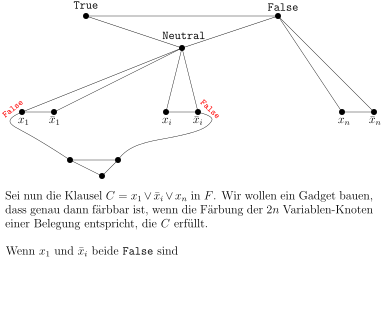
course1/public/img/09-complexity-theory/sat-to-col/sat-to-col-01-08.svg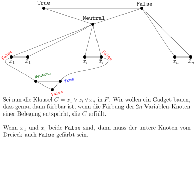
course1/public/img/09-complexity-theory/sat-to-col/sat-to-col-01-09.svg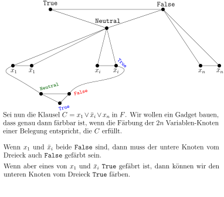
course1/public/img/09-complexity-theory/sat-to-col/sat-to-col-01-10.svg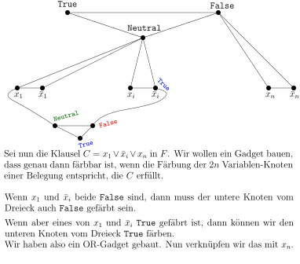
course1/public/img/09-complexity-theory/sat-to-col/sat-to-col-01-11.svg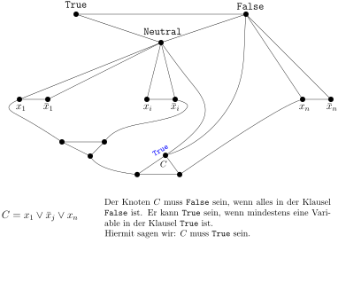
course1/public/img/09-complexity-theory/sat-to-col/sat-to-col-01-15.svg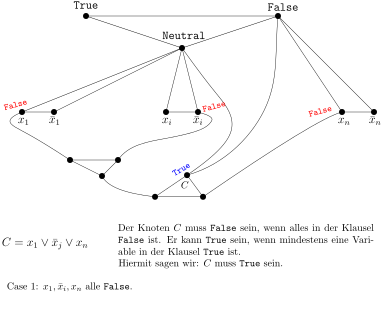
course1/public/img/09-complexity-theory/sat-to-col/sat-to-col-01-16.svg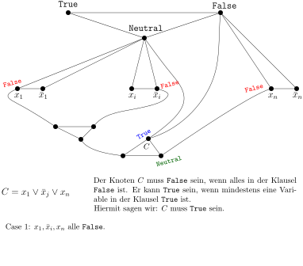
course1/public/img/09-complexity-theory/sat-to-col/sat-to-col-01-17.svg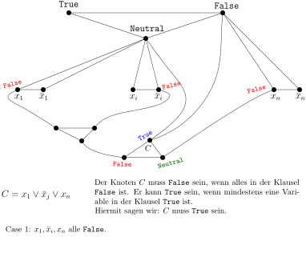
course1/public/img/09-complexity-theory/sat-to-col/sat-to-col-01-18.svg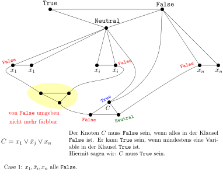
course1/public/img/09-complexity-theory/sat-to-col/sat-to-col-01-19.svg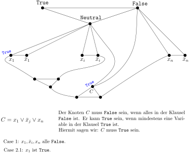
course1/public/img/09-complexity-theory/sat-to-col/sat-to-col-01-20.svg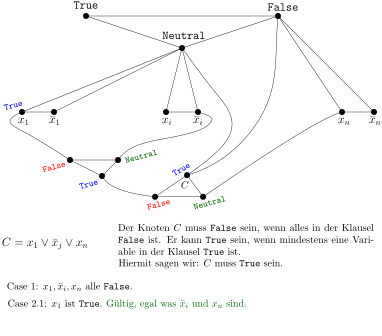
course1/public/img/09-complexity-theory/sat-to-col/sat-to-col-01-21.svg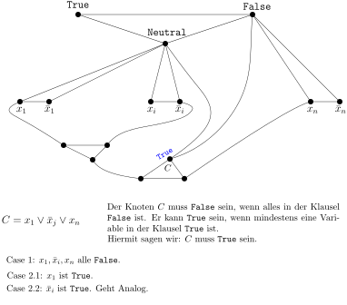
course1/public/img/09-complexity-theory/sat-to-col/sat-to-col-01-22.svg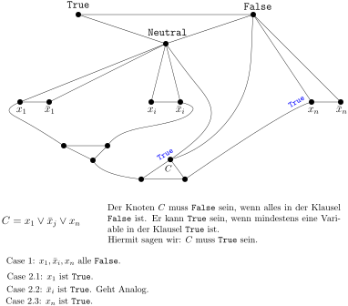
course1/public/img/09-complexity-theory/sat-to-col/sat-to-col-01-23.svg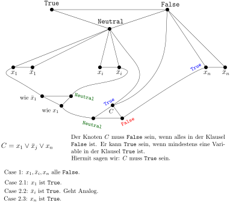
course1/public/img/09-complexity-theory/sat-to-col/sat-to-col-01-24.svgWir wiederholen die beschriebene Konstruktion für jede./course1/wly/09/05-NP-reductions.wly:135:9 Klausel in ./course1/wly/09/05-NP-reductions.wly:136:9$F$./course1/wly/09/05-NP-reductions.wly:136:20../course1/wly/09/05-NP-reductions.wly:136:23 Wir erhalten einen Graphen ./course1/wly/09/05-NP-reductions.wly:136:23$G$./course1/wly/09/05-NP-reductions.wly:136:52,./course1/wly/09/05-NP-reductions.wly:136:55 der genau./course1/wly/09/05-NP-reductions.wly:136:55 dann ./course1/wly/09/05-NP-reductions.wly:137:9$3$./course1/wly/09/05-NP-reductions.wly:137:14-färbbar./course1/wly/09/05-NP-reductions.wly:137:17 ist, wenn ./course1/wly/09/05-NP-reductions.wly:137:17$F$./course1/wly/09/05-NP-reductions.wly:137:36 erfüllbar ist. Auch können./course1/wly/09/05-NP-reductions.wly:137:39 wir direkt eine gültige ./course1/wly/09/05-NP-reductions.wly:138:9$3$./course1/wly/09/05-NP-reductions.wly:138:33-Färbung./course1/wly/09/05-NP-reductions.wly:138:36 in eine erfüllende./course1/wly/09/05-NP-reductions.wly:138:36 Belegung übersetzen und umgekehrt. Hier ist also der Code:./course1/wly/09/05-NP-reductions.wly:139:9
def is_3CNF_satisfiable(the_3_cnf_formula):./course1/wly/09/05-NP-reductions.wly:142:9
G = cOnvert_to_graph(the_3_cnf_formula)./course1/wly/09/05-NP-reductions.wly:143:9
./course1/wly/09/05-NP-reductions.wly:144:9# G ist der oben konstruierte Graph./course1/wly/09/05-NP-reductions.wly:144:15
return is_3_colorable(G)./course1/wly/09/05-NP-reductions.wly:145:9
A\(\square\)
Wir haben also gezeigt, wie man eine ./course1/wly/09/05-NP-reductions.wly:148:5$3$./course1/wly/09/05-NP-reductions.wly:148:42-CNF./course1/wly/09/05-NP-reductions.wly:148:45 ./course1/wly/09/05-NP-reductions.wly:148:45$F$./course1/wly/09/05-NP-reductions.wly:148:50 in einen./course1/wly/09/05-NP-reductions.wly:148:53 Graphen ./course1/wly/09/05-NP-reductions.wly:149:5$G$./course1/wly/09/05-NP-reductions.wly:149:13 umwandelt, so dass./course1/wly/09/05-NP-reductions.wly:149:16
gilt. Allerdings ging das nur unter der Annahme, dass ./course1/wly/09/05-NP-reductions.wly:155:5$F$./course1/wly/09/05-NP-reductions.wly:155:59 ./course1/wly/09/05-NP-reductions.wly:155:62 eine ./course1/wly/09/05-NP-reductions.wly:156:5$3$./course1/wly/09/05-NP-reductions.wly:156:10 -CNF ist. Wie verhält es sich, wenn ./course1/wly/09/05-NP-reductions.wly:156:13$F$./course1/wly/09/05-NP-reductions.wly:156:50 eine./course1/wly/09/05-NP-reductions.wly:156:53 allgemeine CNF-Formel ist?./course1/wly/09/05-NP-reductions.wly:157:5
Theorem 9.5.3./course1/wly/09/05-NP-reductions.wly:159:5 ./course1/wly/09/05-NP-reductions.wly:159:5 Es gibt einen effizienten Algorithmus, der als Input eine./course1/wly/09/05-NP-reductions.wly:161:9 CNF-Formel ./course1/wly/09/05-NP-reductions.wly:162:9$F$./course1/wly/09/05-NP-reductions.wly:162:20 nimmt und eine 3-CNF-Formel ./course1/wly/09/05-NP-reductions.wly:162:23$F'$./course1/wly/09/05-NP-reductions.wly:162:52 ausgibt,./course1/wly/09/05-NP-reductions.wly:162:56 so dass gilt:./course1/wly/09/05-NP-reductions.wly:163:9
Falls es einen effizienten Algorithmus für ./course1/wly/09/05-NP-reductions.wly:169:9$3$./course1/wly/09/05-NP-reductions.wly:169:52 -SAT gibt,./course1/wly/09/05-NP-reductions.wly:169:55 dann also auch einen für CNF-SAT../course1/wly/09/05-NP-reductions.wly:170:9
Beweis Wir starten mit ./course1/wly/09/05-NP-reductions.wly:173:9$F_0 := F$./course1/wly/09/05-NP-reductions.wly:173:25 und definieren eine Folge./course1/wly/09/05-NP-reductions.wly:173:35 ./course1/wly/09/05-NP-reductions.wly:174:9$F_0, F_1, \dots$./course1/wly/09/05-NP-reductions.wly:174:9 von CNF-Formeln. Sei ./course1/wly/09/05-NP-reductions.wly:174:26$F_i$./course1/wly/09/05-NP-reductions.wly:174:48 die derzeit./course1/wly/09/05-NP-reductions.wly:174:53 letzte erzeugte CNF-Formel. Falls ./course1/wly/09/05-NP-reductions.wly:175:9$F_i$./course1/wly/09/05-NP-reductions.wly:175:43 eine Klausel ./course1/wly/09/05-NP-reductions.wly:175:48$C$./course1/wly/09/05-NP-reductions.wly:175:62 ./course1/wly/09/05-NP-reductions.wly:175:65 mit vier oder mehr Literalen enthält, führen wir eine./course1/wly/09/05-NP-reductions.wly:176:9 Operation durch, die ./course1/wly/09/05-NP-reductions.wly:177:9$C$./course1/wly/09/05-NP-reductions.wly:177:30 durch zwei neue, kleinere./course1/wly/09/05-NP-reductions.wly:177:33 Klauseln ersetzt: sei./course1/wly/09/05-NP-reductions.wly:178:9
mit ./course1/wly/09/05-NP-reductions.wly:184:9$k \geq 4$./course1/wly/09/05-NP-reductions.wly:184:13../course1/wly/09/05-NP-reductions.wly:184:23 Wir führen eine neue, bisher nicht./course1/wly/09/05-NP-reductions.wly:184:23 verwendete Variable ./course1/wly/09/05-NP-reductions.wly:185:9$z$./course1/wly/09/05-NP-reductions.wly:185:29 ein und erschaffen die Klauseln./course1/wly/09/05-NP-reductions.wly:185:32
Wir entfernen nun ./course1/wly/09/05-NP-reductions.wly:192:9$C$./course1/wly/09/05-NP-reductions.wly:192:27 und fügen ./course1/wly/09/05-NP-reductions.wly:192:30$C_1$./course1/wly/09/05-NP-reductions.wly:192:41 und ./course1/wly/09/05-NP-reductions.wly:192:46$C_2$./course1/wly/09/05-NP-reductions.wly:192:51 ein und./course1/wly/09/05-NP-reductions.wly:192:56 erhalten eine neue CNF-Formel ./course1/wly/09/05-NP-reductions.wly:193:9$F_{i+1}$./course1/wly/09/05-NP-reductions.wly:193:39../course1/wly/09/05-NP-reductions.wly:193:48 Wir sehen nun:./course1/wly/09/05-NP-reductions.wly:193:48 wenn ./course1/wly/09/05-NP-reductions.wly:194:9$\alpha$./course1/wly/09/05-NP-reductions.wly:194:14 die Formel ./course1/wly/09/05-NP-reductions.wly:194:22$F_{i+1}$./course1/wly/09/05-NP-reductions.wly:194:34 erfüllt, dann erfüllt./course1/wly/09/05-NP-reductions.wly:194:43 sie auch ./course1/wly/09/05-NP-reductions.wly:195:9$F_i$./course1/wly/09/05-NP-reductions.wly:195:18;./course1/wly/09/05-NP-reductions.wly:195:23 umgekehrt wenn die Belegung ./course1/wly/09/05-NP-reductions.wly:195:23$\beta$./course1/wly/09/05-NP-reductions.wly:195:53 die./course1/wly/09/05-NP-reductions.wly:195:60 Formel ./course1/wly/09/05-NP-reductions.wly:196:9$F_i$./course1/wly/09/05-NP-reductions.wly:196:16 erfüllt, dann erfüllt ./course1/wly/09/05-NP-reductions.wly:196:21$\beta$./course1/wly/09/05-NP-reductions.wly:196:44 insbesondere./course1/wly/09/05-NP-reductions.wly:196:51 ./course1/wly/09/05-NP-reductions.wly:197:9$C$./course1/wly/09/05-NP-reductions.wly:197:9;./course1/wly/09/05-NP-reductions.wly:197:12 wir bauen nun eine neue Belegung, die auch ./course1/wly/09/05-NP-reductions.wly:197:12$z$./course1/wly/09/05-NP-reductions.wly:197:57 einen./course1/wly/09/05-NP-reductions.wly:197:60 Wert zuweist und dann ./course1/wly/09/05-NP-reductions.wly:198:9$C_1$./course1/wly/09/05-NP-reductions.wly:198:31 und ./course1/wly/09/05-NP-reductions.wly:198:36$C_2$./course1/wly/09/05-NP-reductions.wly:198:41 erfüllt: falls (1)./course1/wly/09/05-NP-reductions.wly:198:46 ./course1/wly/09/05-NP-reductions.wly:199:9$\beta$./course1/wly/09/05-NP-reductions.wly:199:9 die Klausel ./course1/wly/09/05-NP-reductions.wly:199:16$(u_1 \vee u_2)$./course1/wly/09/05-NP-reductions.wly:199:29 erfüllt, dann setzen./course1/wly/09/05-NP-reductions.wly:199:45 wir ./course1/wly/09/05-NP-reductions.wly:200:9$z$./course1/wly/09/05-NP-reductions.wly:200:13 auf ./course1/wly/09/05-NP-reductions.wly:200:16$1$./course1/wly/09/05-NP-reductions.wly:200:21,./course1/wly/09/05-NP-reductions.wly:200:24 also ./course1/wly/09/05-NP-reductions.wly:200:24$\alpha := \beta \cup [z \mapsto 1]$./course1/wly/09/05-NP-reductions.wly:200:31../course1/wly/09/05-NP-reductions.wly:200:67 ./course1/wly/09/05-NP-reductions.wly:200:67 Die Belegung ./course1/wly/09/05-NP-reductions.wly:201:9$\alpha$./course1/wly/09/05-NP-reductions.wly:201:22 erfüllt nun ./course1/wly/09/05-NP-reductions.wly:201:30$C_1$./course1/wly/09/05-NP-reductions.wly:201:43,./course1/wly/09/05-NP-reductions.wly:201:48 weil ./course1/wly/09/05-NP-reductions.wly:201:48$\beta$./course1/wly/09/05-NP-reductions.wly:201:55 das./course1/wly/09/05-NP-reductions.wly:201:62 bereits tut, und ./course1/wly/09/05-NP-reductions.wly:202:9$C_2$./course1/wly/09/05-NP-reductions.wly:202:26,./course1/wly/09/05-NP-reductions.wly:202:31 weil ./course1/wly/09/05-NP-reductions.wly:202:31$\alpha(z)=1$./course1/wly/09/05-NP-reductions.wly:202:38 ist; falls./course1/wly/09/05-NP-reductions.wly:202:51 jedoch (2) ./course1/wly/09/05-NP-reductions.wly:203:9$\beta$./course1/wly/09/05-NP-reductions.wly:203:20 die Klausel ./course1/wly/09/05-NP-reductions.wly:203:27$(u_1 \vee u_2)$./course1/wly/09/05-NP-reductions.wly:203:40 nicht./course1/wly/09/05-NP-reductions.wly:203:56 erfüllt, dann muss sie, da sie ja ./course1/wly/09/05-NP-reductions.wly:204:9$C$./course1/wly/09/05-NP-reductions.wly:204:43 erfüllt, die Klausel./course1/wly/09/05-NP-reductions.wly:204:46 ./course1/wly/09/05-NP-reductions.wly:205:9$(u_3 \vee \dots \vee u_k)$./course1/wly/09/05-NP-reductions.wly:205:9 erfüllen und erfüllt somit./course1/wly/09/05-NP-reductions.wly:205:36 ./course1/wly/09/05-NP-reductions.wly:206:9$C_2$./course1/wly/09/05-NP-reductions.wly:206:9,./course1/wly/09/05-NP-reductions.wly:206:14 auch ohne Verwendung von ./course1/wly/09/05-NP-reductions.wly:206:14$z$./course1/wly/09/05-NP-reductions.wly:206:41../course1/wly/09/05-NP-reductions.wly:206:44 Wir setzen nun ./course1/wly/09/05-NP-reductions.wly:206:44$z$./course1/wly/09/05-NP-reductions.wly:206:61 ./course1/wly/09/05-NP-reductions.wly:206:64 auf ./course1/wly/09/05-NP-reductions.wly:207:9$0$./course1/wly/09/05-NP-reductions.wly:207:13,./course1/wly/09/05-NP-reductions.wly:207:16 also ./course1/wly/09/05-NP-reductions.wly:207:16$\alpha := \beta \cup [z \mapsto 0]$./course1/wly/09/05-NP-reductions.wly:207:23 und./course1/wly/09/05-NP-reductions.wly:207:59 erfüllen sowohl ./course1/wly/09/05-NP-reductions.wly:208:9$C_1$./course1/wly/09/05-NP-reductions.wly:208:25 als auch ./course1/wly/09/05-NP-reductions.wly:208:30$C_2$./course1/wly/09/05-NP-reductions.wly:208:40../course1/wly/09/05-NP-reductions.wly:208:45 Alle anderen./course1/wly/09/05-NP-reductions.wly:208:45 Klauseln sind sowieso erfüllt, weil ./course1/wly/09/05-NP-reductions.wly:209:9$\beta$./course1/wly/09/05-NP-reductions.wly:209:45 sie bereits./course1/wly/09/05-NP-reductions.wly:209:52 erfüllt. Wir sehen:./course1/wly/09/05-NP-reductions.wly:210:9
Die beiden neuen Klauseln ./course1/wly/09/05-NP-reductions.wly:216:9$C_1$./course1/wly/09/05-NP-reductions.wly:216:35 und ./course1/wly/09/05-NP-reductions.wly:216:40$C_2$./course1/wly/09/05-NP-reductions.wly:216:45 sind jeweils./course1/wly/09/05-NP-reductions.wly:216:50 echt kleiner als ./course1/wly/09/05-NP-reductions.wly:217:9$C$./course1/wly/09/05-NP-reductions.wly:217:26../course1/wly/09/05-NP-reductions.wly:217:29 Der Prozess endet irgendwann mit./course1/wly/09/05-NP-reductions.wly:217:29 einer Formel ./course1/wly/09/05-NP-reductions.wly:218:9$F_t$./course1/wly/09/05-NP-reductions.wly:218:22,./course1/wly/09/05-NP-reductions.wly:218:27 in der jede Klausel höchstens drei./course1/wly/09/05-NP-reductions.wly:218:27 Literale hat. Dies ist unser ./course1/wly/09/05-NP-reductions.wly:219:9$F'$./course1/wly/09/05-NP-reductions.wly:219:38../course1/wly/09/05-NP-reductions.wly:219:42A\(\square\)
Wir haben nun also eine Kette von Implikationen./course1/wly/09/05-NP-reductions.wly:221:5 erschaffen:./course1/wly/09/05-NP-reductions.wly:222:5
Wenn ./course1/wly/09/05-NP-reductions.wly:226:13CNF-Satisfiability./course1/wly/09/05-NP-reductions.wly:226:19 in P, dann auch./course1/wly/09/05-NP-reductions.wly:226:42 ./course1/wly/09/05-NP-reductions.wly:227:133-Colorability./course1/wly/09/05-NP-reductions.wly:227:14 (./course1/wly/09/05-NP-reductions.wly:227:33Theorem 9.5.1)../course1/wly/09/05-NP-reductions.wly:227:33
Wenn ./course1/wly/09/05-NP-reductions.wly:230:133-Colorability./course1/wly/09/05-NP-reductions.wly:230:19 in P, dann auch ./course1/wly/09/05-NP-reductions.wly:230:383-SAT./course1/wly/09/05-NP-reductions.wly:230:56 ./course1/wly/09/05-NP-reductions.wly:230:66 (./course1/wly/09/05-NP-reductions.wly:231:13Theorem 9.5.2)../course1/wly/09/05-NP-reductions.wly:231:13
Wenn ./course1/wly/09/05-NP-reductions.wly:234:133-SAT./course1/wly/09/05-NP-reductions.wly:234:19 in P, dann auch./course1/wly/09/05-NP-reductions.wly:234:29CNF-Satisfiability./course1/wly/09/05-NP-reductions.wly:234:46 ./course1/wly/09/05-NP-reductions.wly:234:69 (./course1/wly/09/05-NP-reductions.wly:235:13Theorem 9.5.3)../course1/wly/09/05-NP-reductions.wly:235:13
Beachten Sie, dass alle Beweise eine ähnliche Form haben:./course1/wly/09/05-NP-reductions.wly:237:5 um die Aussage ./course1/wly/09/05-NP-reductions.wly:238:5wenn ./course1/wly/09/05-NP-reductions.wly:238:21$L_1 \in P$./course1/wly/09/05-NP-reductions.wly:238:26,./course1/wly/09/05-NP-reductions.wly:238:37 dann auch ./course1/wly/09/05-NP-reductions.wly:238:37$L_2 \in P$./course1/wly/09/05-NP-reductions.wly:238:49 ./course1/wly/09/05-NP-reductions.wly:238:61 zu zeigen, nehmen wir eine beliebiges ./course1/wly/09/05-NP-reductions.wly:239:5$x \in \Sigma_1$./course1/wly/09/05-NP-reductions.wly:239:43 ./course1/wly/09/05-NP-reductions.wly:239:59 (eine ./course1/wly/09/05-NP-reductions.wly:240:5$L_1$./course1/wly/09/05-NP-reductions.wly:240:11-Instanz)./course1/wly/09/05-NP-reductions.wly:240:16 und wandeln es um in ein./course1/wly/09/05-NP-reductions.wly:240:16 ./course1/wly/09/05-NP-reductions.wly:241:5$y \in \Sigma_2$./course1/wly/09/05-NP-reductions.wly:241:5 (eine ./course1/wly/09/05-NP-reductions.wly:241:21$L_2$./course1/wly/09/05-NP-reductions.wly:241:28-Instanz),./course1/wly/09/05-NP-reductions.wly:241:33 so dass./course1/wly/09/05-NP-reductions.wly:241:33
garantiert ist. Wenn es also einen effizienten Algorithmus./course1/wly/09/05-NP-reductions.wly:247:5
./course1/wly/09/05-NP-reductions.wly:248:5is_in_L2./course1/wly/09/05-NP-reductions.wly:248:6
gibt, dann können wir mit folgendem Code auch./course1/wly/09/05-NP-reductions.wly:248:15
./course1/wly/09/05-NP-reductions.wly:249:5$L_1$./course1/wly/09/05-NP-reductions.wly:249:5
effizient entscheiden:./course1/wly/09/05-NP-reductions.wly:249:10
!! def is_in_L1(x):./course1/wly/09/05-NP-reductions.wly:252:5 !! y = convert_from_L1_instance_to_L2_instance(x)./course1/wly/09/05-NP-reductions.wly:253:5 !! return is_in_L2(y)./course1/wly/09/05-NP-reductions.wly:254:5
Dies ist eine ./course1/wly/09/05-NP-reductions.wly:257:5Reduktion./course1/wly/09/05-NP-reductions.wly:257:20,./course1/wly/09/05-NP-reductions.wly:257:30 wie wir sie schon in ./course1/wly/09/05-NP-reductions.wly:257:30Definition 8.8.4 kennengelernt haben, nun aber mit./course1/wly/09/05-NP-reductions.wly:258:5 einer Aussage über die Laufzeit../course1/wly/09/05-NP-reductions.wly:259:5
Definition 9.5.4 (Polynomialzeitreduktion)./course1/wly/09/05-NP-reductions.wly:261:5../course1/wly/09/05-NP-reductions.wly:263:36 Seien./course1/wly/09/05-NP-reductions.wly:263:36 ./course1/wly/09/05-NP-reductions.wly:264:9$L_1 \subseteq \Sigma_1^*$./course1/wly/09/05-NP-reductions.wly:264:9 und ./course1/wly/09/05-NP-reductions.wly:264:35$L_2 \subseteq \Sigma_2^*$./course1/wly/09/05-NP-reductions.wly:264:40 ./course1/wly/09/05-NP-reductions.wly:264:66 zwei Sprachen. Eine Funktion./course1/wly/09/05-NP-reductions.wly:265:9 ./course1/wly/09/05-NP-reductions.wly:266:9$f: \Sigma_1^* \rightarrow \Sigma_2^*$./course1/wly/09/05-NP-reductions.wly:266:9 heißt./course1/wly/09/05-NP-reductions.wly:266:47 ./course1/wly/09/05-NP-reductions.wly:267:9Polynomialzeitreduktion von ./course1/wly/09/05-NP-reductions.wly:267:10$L_1$./course1/wly/09/05-NP-reductions.wly:267:38 auf ./course1/wly/09/05-NP-reductions.wly:267:43$L_2$./course1/wly/09/05-NP-reductions.wly:267:48 ./course1/wly/09/05-NP-reductions.wly:267:53 wenn./course1/wly/09/05-NP-reductions.wly:267:55
und ./course1/wly/09/05-NP-reductions.wly:274:9$f$./course1/wly/09/05-NP-reductions.wly:274:13 in Zeit ./course1/wly/09/05-NP-reductions.wly:274:16$\poly(n)$./course1/wly/09/05-NP-reductions.wly:274:25 berechnet werden kann. Wenn es./course1/wly/09/05-NP-reductions.wly:274:35 also ein Polynom ./course1/wly/09/05-NP-reductions.wly:275:9$p: \N \rightarrow \N$./course1/wly/09/05-NP-reductions.wly:275:26 und eine./course1/wly/09/05-NP-reductions.wly:275:48 Turingmaschine ./course1/wly/09/05-NP-reductions.wly:276:9$M$./course1/wly/09/05-NP-reductions.wly:276:24 mit Eingabealphabet ./course1/wly/09/05-NP-reductions.wly:276:27$\Sigma_1$./course1/wly/09/05-NP-reductions.wly:276:48 und./course1/wly/09/05-NP-reductions.wly:276:58 Ausgabealphabet ./course1/wly/09/05-NP-reductions.wly:277:9$\Sigma_2$./course1/wly/09/05-NP-reductions.wly:277:25 gibt, die Laufzeit ./course1/wly/09/05-NP-reductions.wly:277:35$p$./course1/wly/09/05-NP-reductions.wly:277:55 hat und./course1/wly/09/05-NP-reductions.wly:277:58 ./course1/wly/09/05-NP-reductions.wly:278:9$f$./course1/wly/09/05-NP-reductions.wly:278:9 berechnet. Wir schreiben dann ./course1/wly/09/05-NP-reductions.wly:278:12$L_1 \leq_p L_2$./course1/wly/09/05-NP-reductions.wly:278:43../course1/wly/09/05-NP-reductions.wly:278:59
Wenn wir eine Reduktion von
./course1/wly/09/05-NP-reductions.wly:280:5$L_1$./course1/wly/09/05-NP-reductions.wly:280:33
auf
./course1/wly/09/05-NP-reductions.wly:280:38$L_2$./course1/wly/09/05-NP-reductions.wly:280:43
haben und./course1/wly/09/05-NP-reductions.wly:280:48
einen effizienten Algorithmus für
./course1/wly/09/05-NP-reductions.wly:281:5$L_2$./course1/wly/09/05-NP-reductions.wly:281:39,./course1/wly/09/05-NP-reductions.wly:281:44
dann können wir./course1/wly/09/05-NP-reductions.wly:281:44
wie in
./course1/wly/09/05-NP-reductions.wly:282:5is_in_L1(x)./course1/wly/09/05-NP-reductions.wly:282:13
oben skizziert
./course1/wly/09/05-NP-reductions.wly:282:25$L_1$./course1/wly/09/05-NP-reductions.wly:282:41
effizient./course1/wly/09/05-NP-reductions.wly:282:46
entscheiden. Formal:./course1/wly/09/05-NP-reductions.wly:283:5
Beobachtung 9.5.5./course1/wly/09/05-NP-reductions.wly:285:5 ./course1/wly/09/05-NP-reductions.wly:285:5 Wenn ./course1/wly/09/05-NP-reductions.wly:286:9$L_1 \leq_p L_2$./course1/wly/09/05-NP-reductions.wly:286:14 ist und ./course1/wly/09/05-NP-reductions.wly:286:30$L_2 \in {\rm P}$./course1/wly/09/05-NP-reductions.wly:286:39,./course1/wly/09/05-NP-reductions.wly:286:56 dann auch./course1/wly/09/05-NP-reductions.wly:286:56 ./course1/wly/09/05-NP-reductions.wly:287:9$L_1 \in {\rm P}$./course1/wly/09/05-NP-reductions.wly:287:9../course1/wly/09/05-NP-reductions.wly:287:26
Wir haben die folgenden Polynomialzeitreduktionen bereits./course1/wly/09/05-NP-reductions.wly:289:5 kennengelernt:./course1/wly/09/05-NP-reductions.wly:290:5
3-Colorability ./course1/wly/09/05-NP-reductions.wly:294:14$\leq_p$./course1/wly/09/05-NP-reductions.wly:294:29 CNF-Satisfiability./course1/wly/09/05-NP-reductions.wly:294:37
CNF-Satisfiability ./course1/wly/09/05-NP-reductions.wly:297:14$\leq_p$./course1/wly/09/05-NP-reductions.wly:297:33 3-SAT./course1/wly/09/05-NP-reductions.wly:297:41
3-SAT ./course1/wly/09/05-NP-reductions.wly:300:14$\leq_p$./course1/wly/09/05-NP-reductions.wly:300:20 3-Colorability./course1/wly/09/05-NP-reductions.wly:300:28
Erinnern Sie sich an ./course1/wly/09/05-NP-reductions.wly:302:5Independent Set./course1/wly/09/05-NP-reductions.wly:302:27: gegeben ein./course1/wly/09/05-NP-reductions.wly:302:47 Graph ./course1/wly/09/05-NP-reductions.wly:303:5$G$./course1/wly/09/05-NP-reductions.wly:303:11 und eine Zahl ./course1/wly/09/05-NP-reductions.wly:303:14$k$./course1/wly/09/05-NP-reductions.wly:303:29,./course1/wly/09/05-NP-reductions.wly:303:32 gibt es eine unabhängige./course1/wly/09/05-NP-reductions.wly:303:32 Menge ./course1/wly/09/05-NP-reductions.wly:304:5$X \subseteq V$./course1/wly/09/05-NP-reductions.wly:304:11 mit ./course1/wly/09/05-NP-reductions.wly:304:26$|X| \geq k$./course1/wly/09/05-NP-reductions.wly:304:31?./course1/wly/09/05-NP-reductions.wly:304:43
Theorem 9.5.6./course1/wly/09/05-NP-reductions.wly:306:5 ./course1/wly/09/05-NP-reductions.wly:306:5 ./course1/wly/09/05-NP-reductions.wly:307:93-SAT ./course1/wly/09/05-NP-reductions.wly:307:10$\leq_p$./course1/wly/09/05-NP-reductions.wly:307:16 Independent Set./course1/wly/09/05-NP-reductions.wly:307:24../course1/wly/09/05-NP-reductions.wly:307:45
Beweis Gegeben sei eine 3-CNF-Formel ./course1/wly/09/05-NP-reductions.wly:310:9$F$./course1/wly/09/05-NP-reductions.wly:310:39 mit ./course1/wly/09/05-NP-reductions.wly:310:42$n$./course1/wly/09/05-NP-reductions.wly:310:47 Variablen und ./course1/wly/09/05-NP-reductions.wly:310:50$m$./course1/wly/09/05-NP-reductions.wly:310:65 ./course1/wly/09/05-NP-reductions.wly:310:68 Klauseln. Wir bauen folgenden Graphen ./course1/wly/09/05-NP-reductions.wly:311:9$G$./course1/wly/09/05-NP-reductions.wly:311:47:./course1/wly/09/05-NP-reductions.wly:311:50
und setzen ./course1/wly/09/05-NP-reductions.wly:318:9$k:=n+m$./course1/wly/09/05-NP-reductions.wly:318:20../course1/wly/09/05-NP-reductions.wly:318:28 Wir müssen nun folgendes zeigen:./course1/wly/09/05-NP-reductions.wly:318:28
Falls ./course1/wly/09/05-NP-reductions.wly:325:9$\alpha$./course1/wly/09/05-NP-reductions.wly:325:15 eine erfüllende Belegung von ./course1/wly/09/05-NP-reductions.wly:325:23$F$./course1/wly/09/05-NP-reductions.wly:325:53 ist, dann./course1/wly/09/05-NP-reductions.wly:325:56 gibt es folgende unabhängige Menge der Größe ./course1/wly/09/05-NP-reductions.wly:326:9$k$./course1/wly/09/05-NP-reductions.wly:326:54:./course1/wly/09/05-NP-reductions.wly:326:57
Für jede Variable ./course1/wly/09/05-NP-reductions.wly:330:17$x$./course1/wly/09/05-NP-reductions.wly:330:35 nehmen wir ./course1/wly/09/05-NP-reductions.wly:330:38$x$./course1/wly/09/05-NP-reductions.wly:330:50 in ./course1/wly/09/05-NP-reductions.wly:330:53$I$./course1/wly/09/05-NP-reductions.wly:330:57 auf, falls./course1/wly/09/05-NP-reductions.wly:330:60 ./course1/wly/09/05-NP-reductions.wly:331:17$\alpha(x)=1$./course1/wly/09/05-NP-reductions.wly:331:17 ist, ansonsten ./course1/wly/09/05-NP-reductions.wly:331:30$\bar{x}$./course1/wly/09/05-NP-reductions.wly:331:46../course1/wly/09/05-NP-reductions.wly:331:55
Für jede Klausel ./course1/wly/09/05-NP-reductions.wly:334:17$C = (u \vee v \vee w)$./course1/wly/09/05-NP-reductions.wly:334:34 gibt es ein./course1/wly/09/05-NP-reductions.wly:334:57 erfülltes Literal, sagen wir ./course1/wly/09/05-NP-reductions.wly:335:17$u$./course1/wly/09/05-NP-reductions.wly:335:46../course1/wly/09/05-NP-reductions.wly:335:49 Dieser entspricht dem./course1/wly/09/05-NP-reductions.wly:335:49 Klauselknoten ./course1/wly/09/05-NP-reductions.wly:336:17$u_C$./course1/wly/09/05-NP-reductions.wly:336:31,./course1/wly/09/05-NP-reductions.wly:336:36 der mit mit dem Literalknoten./course1/wly/09/05-NP-reductions.wly:336:36 ./course1/wly/09/05-NP-reductions.wly:337:17$\bar{u}$./course1/wly/09/05-NP-reductions.wly:337:17 verbunden. Da ./course1/wly/09/05-NP-reductions.wly:337:26$\alpha(u) = 1$./course1/wly/09/05-NP-reductions.wly:337:41 und./course1/wly/09/05-NP-reductions.wly:337:56 ./course1/wly/09/05-NP-reductions.wly:338:17$\alpha(\bar{u}) = 0$./course1/wly/09/05-NP-reductions.wly:338:17 ist, ist ./course1/wly/09/05-NP-reductions.wly:338:38$u \not \in I$./course1/wly/09/05-NP-reductions.wly:338:48 und wir./course1/wly/09/05-NP-reductions.wly:338:62 können ./course1/wly/09/05-NP-reductions.wly:339:17$u_C$./course1/wly/09/05-NP-reductions.wly:339:24 in ./course1/wly/09/05-NP-reductions.wly:339:29$I$./course1/wly/09/05-NP-reductions.wly:339:33 aufnehmen../course1/wly/09/05-NP-reductions.wly:339:36
Unsere Menge ./course1/wly/09/05-NP-reductions.wly:342:17$I$./course1/wly/09/05-NP-reductions.wly:342:30 enthält ./course1/wly/09/05-NP-reductions.wly:342:33$n$./course1/wly/09/05-NP-reductions.wly:342:42 Literalknoten und ./course1/wly/09/05-NP-reductions.wly:342:45$m$./course1/wly/09/05-NP-reductions.wly:342:64 ./course1/wly/09/05-NP-reductions.wly:342:67 Klauselknoten, also insgesamt ./course1/wly/09/05-NP-reductions.wly:343:17$k$./course1/wly/09/05-NP-reductions.wly:343:47 Knoten../course1/wly/09/05-NP-reductions.wly:343:50
Für die Gegenrichtung nehmen wir an, dass ./course1/wly/09/05-NP-reductions.wly:345:9$I$./course1/wly/09/05-NP-reductions.wly:345:51 eine./course1/wly/09/05-NP-reductions.wly:345:54 unabhängige Menge von ./course1/wly/09/05-NP-reductions.wly:346:9$G$./course1/wly/09/05-NP-reductions.wly:346:31 ist und ./course1/wly/09/05-NP-reductions.wly:346:34$|I| = n+m$./course1/wly/09/05-NP-reductions.wly:346:43 gilt. Da ./course1/wly/09/05-NP-reductions.wly:346:54$I$./course1/wly/09/05-NP-reductions.wly:346:64 ./course1/wly/09/05-NP-reductions.wly:346:67 pro Literalpaar und pro Klauseldreieck höchstens einen./course1/wly/09/05-NP-reductions.wly:347:9 Knoten enthalten kann, enthält ./course1/wly/09/05-NP-reductions.wly:348:9$I$./course1/wly/09/05-NP-reductions.wly:348:40 ./course1/wly/09/05-NP-reductions.wly:348:43genau./course1/wly/09/05-NP-reductions.wly:348:45 einen pro./course1/wly/09/05-NP-reductions.wly:348:51 Literalpaar und Klauseldreieck. Wir definieren nun eine./course1/wly/09/05-NP-reductions.wly:349:9 Belegung ./course1/wly/09/05-NP-reductions.wly:350:9$\alpha$./course1/wly/09/05-NP-reductions.wly:350:18 wie folgt: wenn für eine Variable ./course1/wly/09/05-NP-reductions.wly:350:26$x$./course1/wly/09/05-NP-reductions.wly:350:61 ./course1/wly/09/05-NP-reductions.wly:350:64 der Literalknoten ./course1/wly/09/05-NP-reductions.wly:351:9$x$./course1/wly/09/05-NP-reductions.wly:351:27 in ./course1/wly/09/05-NP-reductions.wly:351:30$I$./course1/wly/09/05-NP-reductions.wly:351:34 ist, setzen wir ./course1/wly/09/05-NP-reductions.wly:351:37$\alpha(x)=1$./course1/wly/09/05-NP-reductions.wly:351:54;./course1/wly/09/05-NP-reductions.wly:351:67 ./course1/wly/09/05-NP-reductions.wly:351:67 falls ./course1/wly/09/05-NP-reductions.wly:352:9$\bar{x}$./course1/wly/09/05-NP-reductions.wly:352:15 in ./course1/wly/09/05-NP-reductions.wly:352:24$I$./course1/wly/09/05-NP-reductions.wly:352:28 ist, setzen wir ./course1/wly/09/05-NP-reductions.wly:352:31$\alpha(x)=0$./course1/wly/09/05-NP-reductions.wly:352:48../course1/wly/09/05-NP-reductions.wly:352:61 Wir./course1/wly/09/05-NP-reductions.wly:352:61 behaupten nun, dass ./course1/wly/09/05-NP-reductions.wly:353:9$\alpha$./course1/wly/09/05-NP-reductions.wly:353:29 die Formel ./course1/wly/09/05-NP-reductions.wly:353:37$F$./course1/wly/09/05-NP-reductions.wly:353:49 erfüllt. Sei./course1/wly/09/05-NP-reductions.wly:353:52 ./course1/wly/09/05-NP-reductions.wly:354:9$C= (u \vee v \vee w)$./course1/wly/09/05-NP-reductions.wly:354:9 eine beliebige Klausel von ./course1/wly/09/05-NP-reductions.wly:354:31$F$./course1/wly/09/05-NP-reductions.wly:354:59../course1/wly/09/05-NP-reductions.wly:354:62 ./course1/wly/09/05-NP-reductions.wly:354:62 Nach obiger Überlegung enthält ./course1/wly/09/05-NP-reductions.wly:355:9$I$./course1/wly/09/05-NP-reductions.wly:355:40 genau einen./course1/wly/09/05-NP-reductions.wly:355:43 Klauselknoten von ./course1/wly/09/05-NP-reductions.wly:356:9$C$./course1/wly/09/05-NP-reductions.wly:356:27,./course1/wly/09/05-NP-reductions.wly:356:30 sagen wir ./course1/wly/09/05-NP-reductions.wly:356:30$u_C$./course1/wly/09/05-NP-reductions.wly:356:42 . Das heißt somit,./course1/wly/09/05-NP-reductions.wly:356:47 dass der Literalknoten ./course1/wly/09/05-NP-reductions.wly:357:9$\bar{u}$./course1/wly/09/05-NP-reductions.wly:357:32 nicht in ./course1/wly/09/05-NP-reductions.wly:357:41$I$./course1/wly/09/05-NP-reductions.wly:357:51 ist - sonst./course1/wly/09/05-NP-reductions.wly:357:54 wäre ./course1/wly/09/05-NP-reductions.wly:358:9$I$./course1/wly/09/05-NP-reductions.wly:358:14 ja nicht unabhängig. Somit muss ./course1/wly/09/05-NP-reductions.wly:358:17$u \in I$./course1/wly/09/05-NP-reductions.wly:358:50 gelten./course1/wly/09/05-NP-reductions.wly:358:59 und ./course1/wly/09/05-NP-reductions.wly:359:9$\alpha(u) = 1$./course1/wly/09/05-NP-reductions.wly:359:13,./course1/wly/09/05-NP-reductions.wly:359:28 und ./course1/wly/09/05-NP-reductions.wly:359:28$\alpha$./course1/wly/09/05-NP-reductions.wly:359:34 erfüllt ./course1/wly/09/05-NP-reductions.wly:359:42$C$./course1/wly/09/05-NP-reductions.wly:359:51 ../course1/wly/09/05-NP-reductions.wly:359:54A\(\square\)
Übungsaufgabe 9.5.1./course1/wly/09/05-NP-reductions.wly:361:5 ./course1/wly/09/05-NP-reductions.wly:361:5 Zeigen Sie ./course1/wly/09/05-NP-reductions.wly:362:9Independent Set ./course1/wly/09/05-NP-reductions.wly:362:21$\leq_p$./course1/wly/09/05-NP-reductions.wly:362:37 SAT./course1/wly/09/05-NP-reductions.wly:362:45. Also:./course1/wly/09/05-NP-reductions.wly:362:54 Gegeben einen Graphen ./course1/wly/09/05-NP-reductions.wly:363:9$G$./course1/wly/09/05-NP-reductions.wly:363:31 und eine Zahl ./course1/wly/09/05-NP-reductions.wly:363:34$k \in \N$./course1/wly/09/05-NP-reductions.wly:363:49,./course1/wly/09/05-NP-reductions.wly:363:59 zeigen./course1/wly/09/05-NP-reductions.wly:363:59 Sie, wie man die Aussage ./course1/wly/09/05-NP-reductions.wly:364:9$G$./course1/wly/09/05-NP-reductions.wly:364:35 hat eine unabhängige Menge./course1/wly/09/05-NP-reductions.wly:364:38 der Größe ./course1/wly/09/05-NP-reductions.wly:365:9$k$./course1/wly/09/05-NP-reductions.wly:365:19 als aussagenlogische Formel in CNF./course1/wly/09/05-NP-reductions.wly:365:23 darstellen kann../course1/wly/09/05-NP-reductions.wly:366:9
Hinweis:./course1/wly/09/05-NP-reductions.wly:368:10 Die Aussage ./course1/wly/09/05-NP-reductions.wly:368:19"./course1/wly/09/05-NP-reductions.wly:368:33$I$./course1/wly/09/05-NP-reductions.wly:368:34 ist eine unabhängige Menge./course1/wly/09/05-NP-reductions.wly:368:37 von ./course1/wly/09/05-NP-reductions.wly:369:9$G$./course1/wly/09/05-NP-reductions.wly:369:13 ist leicht darzustellen als CNF-Formeln. Die./course1/wly/09/05-NP-reductions.wly:369:17 Aussage ./course1/wly/09/05-NP-reductions.wly:370:9" ./course1/wly/09/05-NP-reductions.wly:370:18$I$./course1/wly/09/05-NP-reductions.wly:370:20 hat Größe ./course1/wly/09/05-NP-reductions.wly:370:23$k$./course1/wly/09/05-NP-reductions.wly:370:34"./course1/wly/09/05-NP-reductions.wly:370:37 ist schwieriger. Sie müssen./course1/wly/09/05-NP-reductions.wly:370:39 quasi ./course1/wly/09/05-NP-reductions.wly:371:9zählen./course1/wly/09/05-NP-reductions.wly:371:16../course1/wly/09/05-NP-reductions.wly:371:23
Sei ./course1/wly/09/05-NP-reductions.wly:376:5$G = (V,E)$./course1/wly/09/05-NP-reductions.wly:376:9 ein Graph. Ein ./course1/wly/09/05-NP-reductions.wly:376:20Hamiltonscher Kreis./course1/wly/09/05-NP-reductions.wly:376:37 ist./course1/wly/09/05-NP-reductions.wly:376:57 ein Kreis, der durch alle Knoten geht. Es muss ein ./course1/wly/09/05-NP-reductions.wly:377:5Kreis./course1/wly/09/05-NP-reductions.wly:377:57 ./course1/wly/09/05-NP-reductions.wly:377:63 sein; Kantenzüge, die einen Knoten mehrmals durchlaufen,./course1/wly/09/05-NP-reductions.wly:378:5 sind also nicht erlaubt. Hier sehen Sie einen Graphen mit./course1/wly/09/05-NP-reductions.wly:379:5 Hamiltonschem Kreis:./course1/wly/09/05-NP-reductions.wly:380:5
Ein ./course1/wly/09/05-NP-reductions.wly:387:5Hamiltonscher Pfad./course1/wly/09/05-NP-reductions.wly:387:10 ist ein Pfad mit ./course1/wly/09/05-NP-reductions.wly:387:29$|V|$./course1/wly/09/05-NP-reductions.wly:387:47 Knoten../course1/wly/09/05-NP-reductions.wly:387:52 Auch hier gilt: kein Knoten darf mehrfach besucht werden../course1/wly/09/05-NP-reductions.wly:388:5 Der untere Graph, der ./course1/wly/09/05-NP-reductions.wly:389:5Petersen-Graph./course1/wly/09/05-NP-reductions.wly:389:28,./course1/wly/09/05-NP-reductions.wly:389:43 hat keinen./course1/wly/09/05-NP-reductions.wly:389:43 Hamiltonschen Kreis, dafür aber einen Hamiltonschen Pfad:./course1/wly/09/05-NP-reductions.wly:390:5
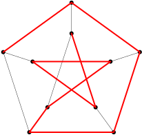
course1/public/img/09-complexity-theory/hamilton-path-and-cycle/hamilton-02-01.svgWir definieren nun die zwei entsprechenden./course1/wly/09/05-NP-reductions.wly:397:5 Entscheidungsprobleme:./course1/wly/09/05-NP-reductions.wly:398:5
Problem 9.5.7./course1/wly/09/05-NP-reductions.wly:400:5 ./course1/wly/09/05-NP-reductions.wly:400:5 ./course1/wly/09/05-NP-reductions.wly:401:9(Hamilton Cycle)../course1/wly/09/05-NP-reductions.wly:401:10 Gegeben ein Graph ./course1/wly/09/05-NP-reductions.wly:401:32$G=(V,E)$./course1/wly/09/05-NP-reductions.wly:401:51,./course1/wly/09/05-NP-reductions.wly:401:60 gibt./course1/wly/09/05-NP-reductions.wly:401:60 es in ./course1/wly/09/05-NP-reductions.wly:402:9$G$./course1/wly/09/05-NP-reductions.wly:402:15 einen Kreis der Länge ./course1/wly/09/05-NP-reductions.wly:402:18$|V|$./course1/wly/09/05-NP-reductions.wly:402:41,./course1/wly/09/05-NP-reductions.wly:402:46 der also durch alle./course1/wly/09/05-NP-reductions.wly:402:46 Knoten geht?./course1/wly/09/05-NP-reductions.wly:403:9
Problem 9.5.8./course1/wly/09/05-NP-reductions.wly:405:5 ./course1/wly/09/05-NP-reductions.wly:405:5 ./course1/wly/09/05-NP-reductions.wly:406:9(Hamilton Path)../course1/wly/09/05-NP-reductions.wly:406:10 Gegeben ein Graph ./course1/wly/09/05-NP-reductions.wly:406:31$G=(V,E)$./course1/wly/09/05-NP-reductions.wly:406:50 , gibt./course1/wly/09/05-NP-reductions.wly:406:59 es in ./course1/wly/09/05-NP-reductions.wly:407:9$G$./course1/wly/09/05-NP-reductions.wly:407:15 einen Pfad der Länge ./course1/wly/09/05-NP-reductions.wly:407:18$|V|-1$./course1/wly/09/05-NP-reductions.wly:407:40,./course1/wly/09/05-NP-reductions.wly:407:47 der also alle ./course1/wly/09/05-NP-reductions.wly:407:47$|V|$./course1/wly/09/05-NP-reductions.wly:407:63 ./course1/wly/09/05-NP-reductions.wly:407:68 Knoten enthält?./course1/wly/09/05-NP-reductions.wly:408:9
Theorem 9.5.9./course1/wly/09/05-NP-reductions.wly:410:5 ./course1/wly/09/05-NP-reductions.wly:410:5 ./course1/wly/09/05-NP-reductions.wly:412:9Hamilton Cycle ./course1/wly/09/05-NP-reductions.wly:412:10$\leq_p$./course1/wly/09/05-NP-reductions.wly:412:25 Hamilton Path./course1/wly/09/05-NP-reductions.wly:412:33
(Falscher) Beweis../course1/wly/09/05-NP-reductions.wly:415:10
Tasten wir uns langsam heran. Wir./course1/wly/09/05-NP-reductions.wly:415:29
stellen uns vor, eine Bibliotheksfunktion./course1/wly/09/05-NP-reductions.wly:416:9
./course1/wly/09/05-NP-reductions.wly:417:9has_hamilton_path(G)./course1/wly/09/05-NP-reductions.wly:417:10
zu haben und wollen mithilfe dieser./course1/wly/09/05-NP-reductions.wly:417:31
eine neue Funktion
./course1/wly/09/05-NP-reductions.wly:418:9has_hamilton_cycle(G)./course1/wly/09/05-NP-reductions.wly:418:29
schreiben. Sei./course1/wly/09/05-NP-reductions.wly:418:51
./course1/wly/09/05-NP-reductions.wly:419:9$u$./course1/wly/09/05-NP-reductions.wly:419:9
ein beliebiger Knoten. Wir wissen: wenn
./course1/wly/09/05-NP-reductions.wly:419:12$G$./course1/wly/09/05-NP-reductions.wly:419:53
einen./course1/wly/09/05-NP-reductions.wly:419:56
Hamiltonschen Kreis hat, dann besucht dieser auch
./course1/wly/09/05-NP-reductions.wly:420:9$u$./course1/wly/09/05-NP-reductions.wly:420:59
und./course1/wly/09/05-NP-reductions.wly:420:62
im Anschluss einen Nachbarnknoten
./course1/wly/09/05-NP-reductions.wly:421:9$v$./course1/wly/09/05-NP-reductions.wly:421:43,./course1/wly/09/05-NP-reductions.wly:421:46
also mit./course1/wly/09/05-NP-reductions.wly:421:46
./course1/wly/09/05-NP-reductions.wly:422:9$\{u,v\} \in E$./course1/wly/09/05-NP-reductions.wly:422:9../course1/wly/09/05-NP-reductions.wly:422:24
Der Graph
./course1/wly/09/05-NP-reductions.wly:422:24$G' := G - \{u,v\}$./course1/wly/09/05-NP-reductions.wly:422:36,./course1/wly/09/05-NP-reductions.wly:422:55
in welchem./course1/wly/09/05-NP-reductions.wly:422:55
wir diese Kante löschen, besitzt somit einen Hamiltonschen./course1/wly/09/05-NP-reductions.wly:423:9
Pfad. Allerdings kann es sein, dass
./course1/wly/09/05-NP-reductions.wly:424:9$G'$./course1/wly/09/05-NP-reductions.wly:424:45
sowieso einen./course1/wly/09/05-NP-reductions.wly:424:49
Hamiltonschen Pfad besitzt, der allerdings nicht
./course1/wly/09/05-NP-reductions.wly:425:9$u$./course1/wly/09/05-NP-reductions.wly:425:58
und./course1/wly/09/05-NP-reductions.wly:425:61
./course1/wly/09/05-NP-reductions.wly:426:9$v$./course1/wly/09/05-NP-reductions.wly:426:9
als Endknoten hat, so dass er sich mit
./course1/wly/09/05-NP-reductions.wly:426:12$\{u,v\}$./course1/wly/09/05-NP-reductions.wly:426:52
nicht./course1/wly/09/05-NP-reductions.wly:426:61
zu einem Hamiltonschen Kreis schließt. Wir müssen irgendwie./course1/wly/09/05-NP-reductions.wly:427:9
die Frage beantworten können: besitzt
./course1/wly/09/05-NP-reductions.wly:428:9$G'$./course1/wly/09/05-NP-reductions.wly:428:47
einen./course1/wly/09/05-NP-reductions.wly:428:51
Hamiltonschen Pfad, der
./course1/wly/09/05-NP-reductions.wly:429:9$u$./course1/wly/09/05-NP-reductions.wly:429:33
und
./course1/wly/09/05-NP-reductions.wly:429:36$v$./course1/wly/09/05-NP-reductions.wly:429:41
als Start- bzw../course1/wly/09/05-NP-reductions.wly:429:44
Endknoten hat? Dies ist einfach: wir können neue Knoten
./course1/wly/09/05-NP-reductions.wly:430:9$s$./course1/wly/09/05-NP-reductions.wly:430:65
./course1/wly/09/05-NP-reductions.wly:430:68
und
./course1/wly/09/05-NP-reductions.wly:431:9$t$./course1/wly/09/05-NP-reductions.wly:431:13
und die Kanten
./course1/wly/09/05-NP-reductions.wly:431:16$\{s,u\}$./course1/wly/09/05-NP-reductions.wly:431:32
und
./course1/wly/09/05-NP-reductions.wly:431:41$\{t,v\}$./course1/wly/09/05-NP-reductions.wly:431:46
einführen../course1/wly/09/05-NP-reductions.wly:431:55
Da
./course1/wly/09/05-NP-reductions.wly:432:9$s$./course1/wly/09/05-NP-reductions.wly:432:12
und
./course1/wly/09/05-NP-reductions.wly:432:15$t$./course1/wly/09/05-NP-reductions.wly:432:20
nun Grad
./course1/wly/09/05-NP-reductions.wly:432:23$1$./course1/wly/09/05-NP-reductions.wly:432:33
haben, muss ein Hamiltonscher./course1/wly/09/05-NP-reductions.wly:432:36
Pfad, wenn er denn existiert,
./course1/wly/09/05-NP-reductions.wly:433:9$u$./course1/wly/09/05-NP-reductions.wly:433:39
und
./course1/wly/09/05-NP-reductions.wly:433:42$v$./course1/wly/09/05-NP-reductions.wly:433:47
als Endknoten./course1/wly/09/05-NP-reductions.wly:433:50
haben. Sei also
./course1/wly/09/05-NP-reductions.wly:434:9$G'' := G' + \{s,u\} + \{t,v\}$./course1/wly/09/05-NP-reductions.wly:434:25../course1/wly/09/05-NP-reductions.wly:434:56
Beobachtung:./course1/wly/09/05-NP-reductions.wly:438:14 ./course1/wly/09/05-NP-reductions.wly:438:27$G$./course1/wly/09/05-NP-reductions.wly:438:28 hat genau dann einen Hamiltonschen./course1/wly/09/05-NP-reductions.wly:438:31 Kreis durch die Kante ./course1/wly/09/05-NP-reductions.wly:439:13$\{u,v\}$./course1/wly/09/05-NP-reductions.wly:439:35 , wenn ./course1/wly/09/05-NP-reductions.wly:439:44$G''$./course1/wly/09/05-NP-reductions.wly:439:52 einen./course1/wly/09/05-NP-reductions.wly:439:57 Hamiltonschen Pfad hat../course1/wly/09/05-NP-reductions.wly:440:13
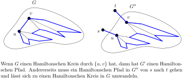
course1/public/img/09-complexity-theory/hamilton-path-and-cycle/hamilton-03-02.svg
Woher wollen wir allerdings wissen, ob der Kreis in
./course1/wly/09/05-NP-reductions.wly:447:9$G$./course1/wly/09/05-NP-reductions.wly:447:61
./course1/wly/09/05-NP-reductions.wly:447:64
(wenn es ihn denn gibt) überhaupt durch
./course1/wly/09/05-NP-reductions.wly:448:9$\{u,v\}$./course1/wly/09/05-NP-reductions.wly:448:49
geht?./course1/wly/09/05-NP-reductions.wly:448:58
Vielleicht gibt es ja einen, aber keinen durch
./course1/wly/09/05-NP-reductions.wly:449:9$\{u,v\}$./course1/wly/09/05-NP-reductions.wly:449:56,./course1/wly/09/05-NP-reductions.wly:449:65
./course1/wly/09/05-NP-reductions.wly:449:65
so dass dann
./course1/wly/09/05-NP-reductions.wly:450:9has_hamilton_path(
./course1/wly/09/05-NP-reductions.wly:450:23$G''$./course1/wly/09/05-NP-reductions.wly:450:42)./course1/wly/09/05-NP-reductions.wly:450:47
mit
./course1/wly/09/05-NP-reductions.wly:450:49False./course1/wly/09/05-NP-reductions.wly:450:55
./course1/wly/09/05-NP-reductions.wly:450:61
antwortet, obwohl wir gerne ein
./course1/wly/09/05-NP-reductions.wly:451:9True./course1/wly/09/05-NP-reductions.wly:451:42
hätten. Um das zu./course1/wly/09/05-NP-reductions.wly:451:47
verhindern, können wir ja
./course1/wly/09/05-NP-reductions.wly:452:9alle./course1/wly/09/05-NP-reductions.wly:452:36
Nachbarn von
./course1/wly/09/05-NP-reductions.wly:452:41$u$./course1/wly/09/05-NP-reductions.wly:452:55
./course1/wly/09/05-NP-reductions.wly:452:58
durchprobieren. Wenn einer klappt, dann haben wir unseren./course1/wly/09/05-NP-reductions.wly:453:9
Kreis; wenn es überhaupt einen Kreis gibt, dann klappt es./course1/wly/09/05-NP-reductions.wly:454:9
auch mit einem Nachbarn (in der Tat: sogar mit zweien)../course1/wly/09/05-NP-reductions.wly:455:9
def has_hamilton_cycle(G):./course1/wly/09/05-NP-reductions.wly:458:9
u = ein beliebiger Knoten./course1/wly/09/05-NP-reductions.wly:459:9
for v in neighbors[u]:./course1/wly/09/05-NP-reductions.wly:460:9
H = G - {u,v} + {s,u} + {t,v}./course1/wly/09/05-NP-reductions.wly:461:9
if has_hamilton_path(H):./course1/wly/09/05-NP-reductions.wly:462:9
return True./course1/wly/09/05-NP-reductions.wly:463:9
return False./course1/wly/09/05-NP-reductions.wly:464:9
Falls nun
./course1/wly/09/05-NP-reductions.wly:467:9has_hamilton_path./course1/wly/09/05-NP-reductions.wly:467:20
polynomielle Laufzeit./course1/wly/09/05-NP-reductions.wly:467:38
./course1/wly/09/05-NP-reductions.wly:468:9$O(n^k)$./course1/wly/09/05-NP-reductions.wly:468:9
hat, so hat
./course1/wly/09/05-NP-reductions.wly:468:17has_hamilton_cycle./course1/wly/09/05-NP-reductions.wly:468:31
eine Laufzeit./course1/wly/09/05-NP-reductions.wly:468:50
von
./course1/wly/09/05-NP-reductions.wly:469:9$O(n^{k+1})$./course1/wly/09/05-NP-reductions.wly:469:13,./course1/wly/09/05-NP-reductions.wly:469:25
auch polynomiell../course1/wly/09/05-NP-reductions.wly:469:25
Was ist nun an diesem Beweis falsch? Nun, der Begriff der./course1/wly/09/05-NP-reductions.wly:471:5
Reduktion, dem wir uns ja mit der Notation
./course1/wly/09/05-NP-reductions.wly:472:5$\leq_p$./course1/wly/09/05-NP-reductions.wly:472:48
./course1/wly/09/05-NP-reductions.wly:472:56
verpflichten, verlangt, dass wir auf Eingabe
./course1/wly/09/05-NP-reductions.wly:473:5$G$./course1/wly/09/05-NP-reductions.wly:473:50
./course1/wly/09/05-NP-reductions.wly:473:53einen./course1/wly/09/05-NP-reductions.wly:473:55
./course1/wly/09/05-NP-reductions.wly:473:61
Graphen
./course1/wly/09/05-NP-reductions.wly:474:5$G'$./course1/wly/09/05-NP-reductions.wly:474:13
bauen, mit der Eigenschaft, dass
./course1/wly/09/05-NP-reductions.wly:474:17$G$./course1/wly/09/05-NP-reductions.wly:474:51
genau./course1/wly/09/05-NP-reductions.wly:474:54
dann einen Hamiltonschen Kreis hat, wenn
./course1/wly/09/05-NP-reductions.wly:475:5$G'$./course1/wly/09/05-NP-reductions.wly:475:46
einen./course1/wly/09/05-NP-reductions.wly:475:50
Hamiltonschen Pfad hat. Uns steht also genau
./course1/wly/09/05-NP-reductions.wly:476:5ein./course1/wly/09/05-NP-reductions.wly:476:51
Aufruf./course1/wly/09/05-NP-reductions.wly:476:55
von
./course1/wly/09/05-NP-reductions.wly:477:5has_hamilton_path./course1/wly/09/05-NP-reductions.wly:477:10
zu. Aber ganz wertlos ist der obige./course1/wly/09/05-NP-reductions.wly:477:28
Beweis dennoch nicht, zeigt er doch, dass, falls
./course1/wly/09/05-NP-reductions.wly:478:5Hamilton./course1/wly/09/05-NP-reductions.wly:478:55
Path
./course1/wly/09/05-NP-reductions.wly:479:5$\in$./course1/wly/09/05-NP-reductions.wly:479:10
P./course1/wly/09/05-NP-reductions.wly:479:15
ist, dann auch
./course1/wly/09/05-NP-reductions.wly:479:22Hamilton Cycle
./course1/wly/09/05-NP-reductions.wly:479:39$\in$./course1/wly/09/05-NP-reductions.wly:479:54
./course1/wly/09/05-NP-reductions.wly:479:59
P./course1/wly/09/05-NP-reductions.wly:480:5. Der Fachbegriff für das, was unsere obige Funktion./course1/wly/09/05-NP-reductions.wly:480:11
./course1/wly/09/05-NP-reductions.wly:481:5has_hamilton_cycle./course1/wly/09/05-NP-reductions.wly:481:6
tut, nennt sich
./course1/wly/09/05-NP-reductions.wly:481:25Cook-Reduktion./course1/wly/09/05-NP-reductions.wly:481:43,./course1/wly/09/05-NP-reductions.wly:481:58
nach./course1/wly/09/05-NP-reductions.wly:481:58
Stephen Cook, einem der Väter der Klasse NP. Eine./course1/wly/09/05-NP-reductions.wly:482:5
Reduktion, die dem strengen Reduktionsbegriff folgt, also./course1/wly/09/05-NP-reductions.wly:483:5
./course1/wly/09/05-NP-reductions.wly:484:5Definition 9.5.4, nennt man in./course1/wly/09/05-NP-reductions.wly:484:5
Abgrenzung dazu
./course1/wly/09/05-NP-reductions.wly:485:5Karp-Reduktion./course1/wly/09/05-NP-reductions.wly:485:22
nach Richard Karp, ein./course1/wly/09/05-NP-reductions.wly:485:37
weiterer NP-Vater../course1/wly/09/05-NP-reductions.wly:486:5
Übungsaufgabe 9.5.2./course1/wly/09/05-NP-reductions.wly:488:5 ./course1/wly/09/05-NP-reductions.wly:488:5 Geben Sie einen "richtigen" Beweis für ./course1/wly/09/05-NP-reductions.wly:489:9Theorem 9.5.9, also eine Karp-Reduktion../course1/wly/09/05-NP-reductions.wly:490:9
Übungsaufgabe 9.5.3./course1/wly/09/05-NP-reductions.wly:492:5 ./course1/wly/09/05-NP-reductions.wly:492:5 Zeigen Sie ./course1/wly/09/05-NP-reductions.wly:493:9Hamilton Path ./course1/wly/09/05-NP-reductions.wly:493:21$\leq_p$./course1/wly/09/05-NP-reductions.wly:493:35 Hamilton Cycle./course1/wly/09/05-NP-reductions.wly:493:43../course1/wly/09/05-NP-reductions.wly:493:63 Wenn es Ihnen einfacher scheint, geben Sie erst einmal eine./course1/wly/09/05-NP-reductions.wly:494:9 Cook-Reduktion../course1/wly/09/05-NP-reductions.wly:495:9